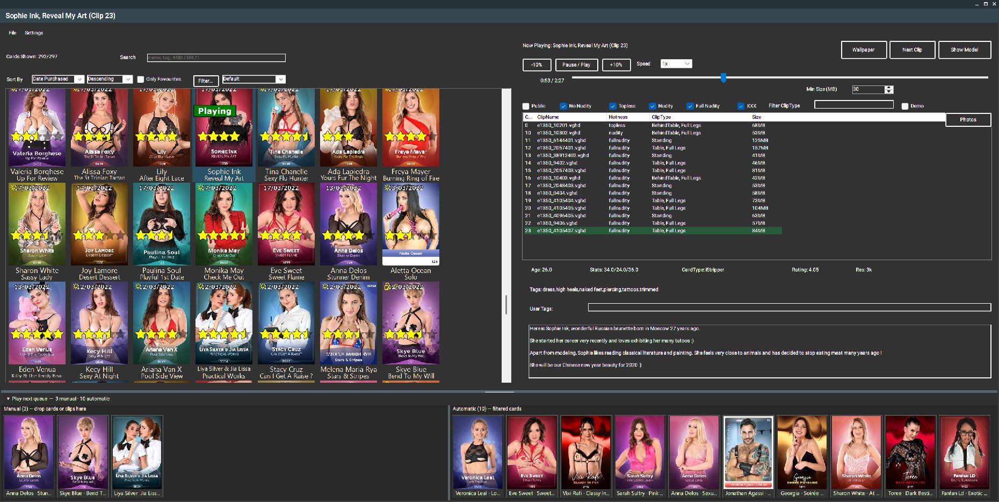

Browse visually
Search, sort and filter your local card library, then choose the exact card or clip you want.
Browse your cards visually, choose exactly what plays, and control compatible desktop playback from one Windows companion.

Search, sort and filter your local card library, then choose the exact card or clip you want.
Pause, seek, change speed and use system-wide hotkeys with compatible desktop animations.
Build manual and automatic queues, reorder entries, and keep filtered cards flowing.
Back up your settings and library metadata, and install new QuickPlayer releases from the app.
A native Windows companion targeting modern x64 systems.
QuickPlayer reads cards already installed by iStripper.
Browsing and queueing remain useful without playback attachment.
Download the latest release of iStripper QuickPlayer for Windows.
Download latest Setup Release notes